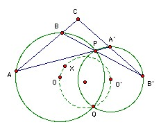

S and S' are circles intersecting at P and Q. A, B are distinct variable points on the circle S not at P or Q. The lines AP, BP meet the circle S' again at A', B' respectively. The lines AB, A'B' meet at C. Show that the circumcenter of AA'C lies on a fixed circle (as A, B vary).
Solution

∠AQA' = ∠AQP + ∠PQA' = (180o - ∠ABP) + ∠PB'A' = ∠CBB' + ∠BB'C = 180o - ∠BCB' = 180o - ∠ACA', so CAQA' is cyclic.
There is one slightly tricky point. ∠AOQ is ambiguous (it could mean either of two angles which sum to 360o). We will use it to mean the angle which is twice ∠APQ. Similarly for ∠A'O'Q.
Let X be the circumcenter of CAQA'. Then XA = XQ. But OA = OQ, so ∠XOA = ∠XOQ. So ∠XOQ = (1/2) ∠AOQ or 180o - (1/2) ∠AOQ depending on the relative positions of X and O. So ∠XOQ = ∠APQ or ∠A'PQ. Similarly, ∠XO'Q = ∠APQ or ∠A'PQ. Thus either ∠XOQ = ∠XO'Q or ∠XOQ + ∠XO'Q = ∠APQ + ∠A'PQ = 180o. In either case X lies on the circle through O, O' and Q.

© John Scholes
jscholes@kalva.demon.co.uk
8 Aug 2003
Last corrected/updated 8 Aug 2003